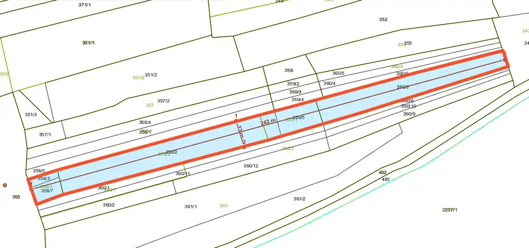
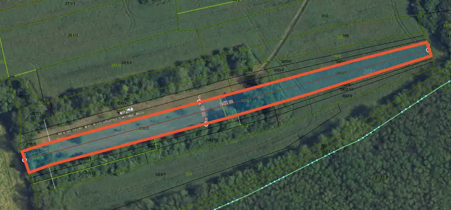
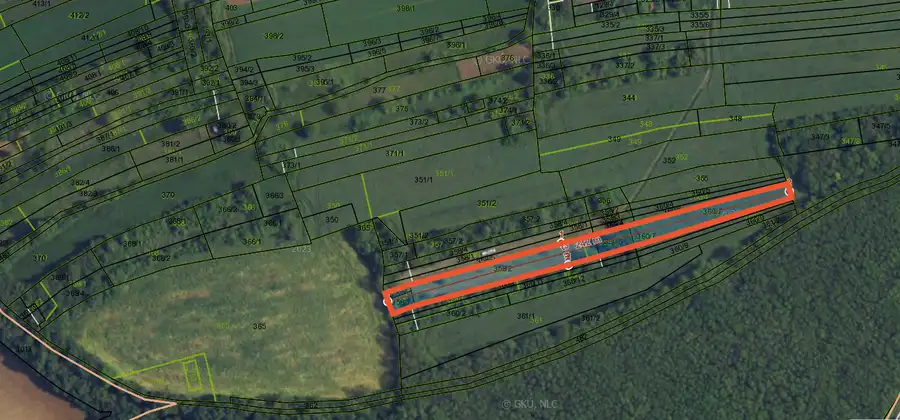
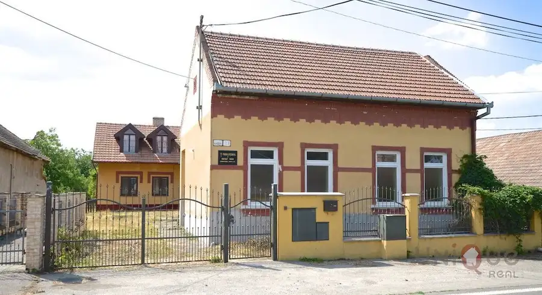
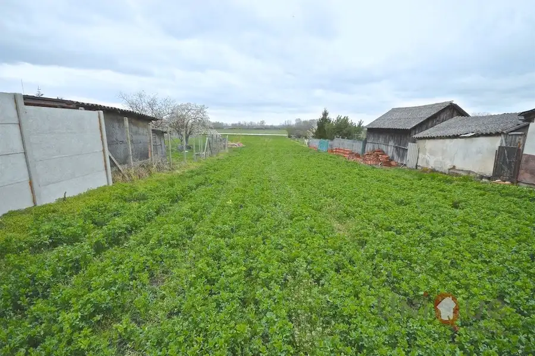
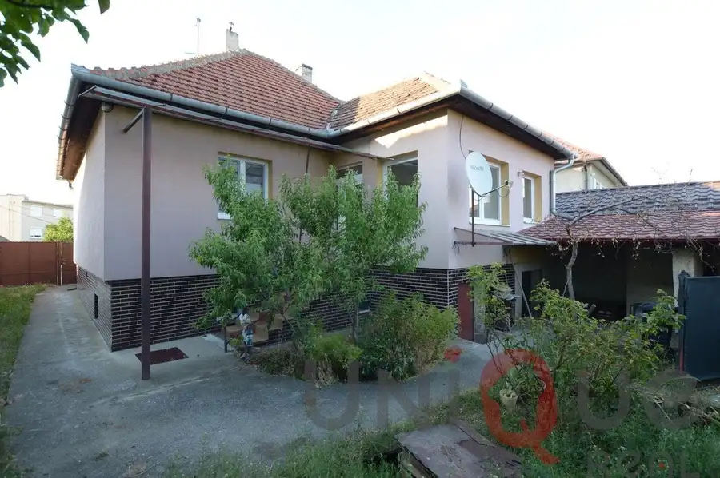

Predaj · Pozemok
Na predaj vinica, ovocný sad, okres levice
Málaš
2 500 €1 € za m²



- Plocha2878 m²
O nehnuteľnosti
Hľadáte kúsok prírody na oddych, pestovanie ovocia či vlastné vinohradnícke dobrodružstvo?Ponúkame Vám na predaj krásny pozemok v katastrálnom území Málaš, medzi obcami Plavé Vozokany a Čaka, neďaleko lesa. Druh pozemku: vinica, ovocný sad a orná pôda Rozloha: 2 878 m² Rozmery: 13 m x 242 m Prístup: poľná cesta Využitie: rekreácia, oddych, pestovanie ovocia a zeleninyCena: 2500 EUR /možnosť navrhnúť cenu/ Kontakt pre obhliadku:Pál Fazekas – +421 (0)908 833 633E-mail: pfazekas@me.com
Parametre
- Druh
- Vinica, chmelnica
- Dátum zverejnenia
- 30. 09. 2025
- Dĺžka pozemku
- 242
- Elektrina
- Nedostupné
- Odpadové vody
- Nedostupné
- Plocha pozemku
- 2878 m²
- Plyn
- Nedostupné
- Prístupová komunikácia
- Hlinená - nespevnená
- Terén pozemku
- Rovinatý
- Typ
- Predaj
- Voda
- Nedostupné
- Územie
- Extravilán
- Šírka pozemku
- 13
Kde to je


Ďalšie ponuky
Celá ponukaMohlo by Vás zaujímať

DomNové 171 500 €Na predaj – veľký dom s priestranným pozemkom v Pohronskom Ruskove Pohronský Ruskov 220 m²
PozemokNové 28 000 €Na predaj pozemok pre výstavbu RD v Patinciach Patince 1655 m²
DomNové 115 000 €Na predaj rodinný dom so záhradou v Šuranoch Šurany 100 m²